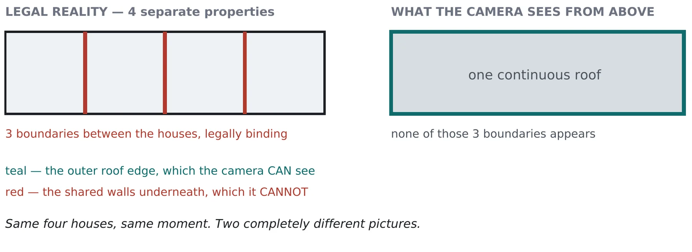
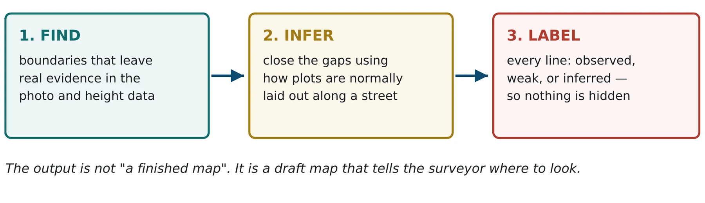
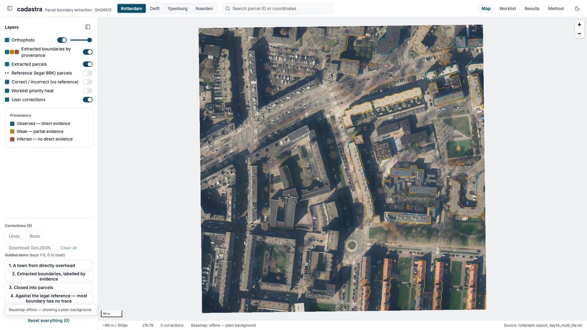

cadastra
AI parcel mapping from drone imagery. It finds the property boundaries that leave evidence, infers the rest from how plots sit along a street, and labels every line as observed or guessed, so surveyors check the guesses first.
Many property boundaries can't be seen from the sky
Automated mapping tools usually assume a boundary is visible in the image. But in dense towns, row houses share one continuous roof, and the legal boundaries between them run underneath it. A camera looking straight down has nothing to detect.

I measured this directly against real legal parcel boundaries. Across four Dutch towns, between 44.8% and 84.2% of boundary length left no visible trace from overhead. A tool that only draws what it sees will silently miss most of the map.
Find, infer, label
Rather than pretend to see the invisible, cadastra does three things and is open about which is which.

- Measure visibilityHow much of the boundary on this tile is invisible: the number everything else rests on
- Six evidence sourcesHeight steps, roof-plane breaks, edges and more, normalised onto one grid
- FuseSix layers combined into one boundary-likelihood map
- Vectorise and closeLines become a graph, then closed parcels under a street-layout prior
- Topology gateShared edges enforced, slivers removed, conflicts flagged
- Surveyor reviewA map and worklist where guessed lines come first

Including what didn't work
| Measure | Result |
|---|---|
| Invisible share of legal boundary, four towns | 44.8% to 84.2% |
| Correctness of observed vs inferred lines, Delft | 67.5% vs 43.0% |
| Correctness of observed vs inferred lines, Rotterdam | 44.7% vs 16.3% |
| Topologically valid output | 100% |
On both tiles measured, observed lines were right more often than inferred ones, so the labels carry real information. That ordering was measured on the base pipeline. When extra building-footprint seeds were added in later experiments it held on only some tiles, so the claim is scoped to the base pipeline.
Negative results, reported openly
- Party-wall detection was dropped as a goal after measurement showed it couldn't be recovered from overhead imagery. It's reported as a measured negative result.
- Full parcel reconstruction mostly fails: 1 of 24 reference parcels matched on a held-out Rotterdam half, 3 of 495 in Delft. The output is a valid boundary layer for triage, not a finished parcel register.
- Ordering the worklist by provenance didn't beat ordering by length (67.0% vs 66.6%), so that claim isn't made.
- Validation uses open Dutch cadastral data, because no Indian legal boundary data is publicly available. The finding is structural, but the percentages are Dutch.
My role, and how the AI tools were used
I build with AI development tools and I'm open about it. My part is the work the tools can't do alone: choosing the problem, writing the specification and the rules every change must respect, splitting the build into small tested phases, and checking each result against the project's own output.
For cadastra, the discipline was in measurement: state what a result would mean before measuring it, report every tolerance with its number, and publish the negative results alongside the positive ones. Dropping party-wall detection was a decision taken from measured evidence.
Every number on this page can be traced to a file in the repository (FINDINGS.md and RESULTS.md).